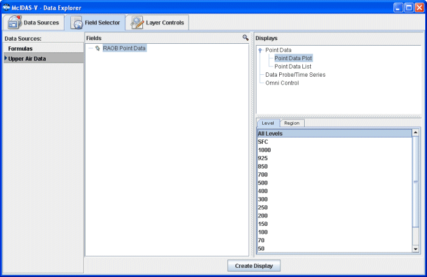

Upper Air Plots of RAOB data
This section describes how to make upper air synoptic plots and Skew-T plots from RAOB data:
 Image 1: RAOB Skew-T
Image 1: RAOB Skew-TSelecting RAOB Point Data from a Remote Server
In the Data Sources tab of the Data Explorer select Point Observations->Plot. For more information about the upper air point chooser, see Choosing Single Level RAOB Data.
In the Server: and Dataset: entry boxes, use
the pull down list to select a remote server and dataset with RAOB data, such
as adde.ucar.edu and
RTPTSRC and click on Connect. Select "Real-Time
Upper Air (Mandatory Levels) and choose either the latest N times
or select specific time(s).
Select an interval and click on Add Source when
you have made your selection.
Creating the Display
The upper air observation data will be shown in the Field Selector tab.

Select "Point Data" in the Fields panel and "Point Data Plot " in the Displays panel. Make the display by clicking on the Create Display button.
The "Gridded Fields" tab allows you to use the Barnes analysis to create gridded
fields of the point observations.
Choosing RAOB Sounding Data from a Remote Server
In the Data Sources tab of the Data Explorer select Point Observations->Soundings->Remote. For more information about the soundings chooser, see Choosing RAOB Data (atmospheric balloon sounding).
For the Server and Dataset select adde.ucar.edu and
RTPTSRC and click Connect.
The list of stations populates in the map. Select the station(s) you want
to use. You can select one or
more stations by clicking on them; hold down the Ctrl key to select more than
one. You can use the Declutter check box to show
all stations (not checked), or only a limited number of stations that do not
overlap each other (checked). When in declutter mode you can zoom in (by dragging
the left mouse) to see more stations. The icons below the map allow you to zoom
and pan.
After you choose stations, select the available time(s) you want to view in
the Available box. The list of available soundings will be
displayed in the Selected box. When you have made your selection
click the Add
Source button.
Making the Sounding Display
The RAOB data will be shown in the Field Selector tab.
Select "RAOB data" in the Fields panel and "Skew-T" or one of the other sounding types in the Displays panel. Make the sounding display by clicking on the Create Display button. The sounding will be displayed in the Layer Controls tab. For more information about the Skew-T and other aerological displays, see Sounding Display and Controls.